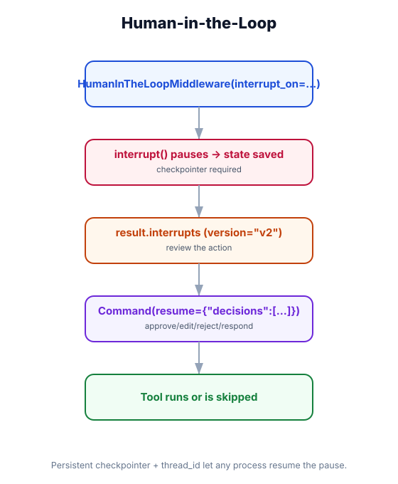

Human-in-the-Loop — Pause, Review & Resume
What you'll learn: How to pause agent execution mid-run for human approval, inspect the paused state, resume or reject with new instructions — and build a full async approval workflow using HumanInTheLoopMiddleware and the checkpointer.

↗ Open full size · ⬇ Edit in Excalidraw — labels use real LangChain classes.
Banks require two people to sign off on large transactions — not because either person is untrustworthy, but because consequences are too large for one judgment. HITL agents work the same way: for high-stakes actions (sending emails, deleting records, executing trades), the agent pauses and a human co-signs before execution continues.
How HITL Works: The Pause/Resume Cycle
Processing user request, calling tools, building its plan.
When the agent is about to call a high-stakes tool, the middleware calls LangGraph's interrupt(). State is saved to the checkpointer. With version="v2" the invoke() call returns a GraphOutput whose .interrupts hold the pending actions.
Your app shows the pending action to the reviewer. They inspect the proposed tool call and its arguments.
Call agent.invoke(Command(resume={"decisions": [{"type": "approve"}]}), config=config, version="v2") with the same thread_id. The agent picks up exactly where it left off.
Resume with a different decision: reject (with feedback), edit (change the tool args), or respond (return a reply as the tool result). Each decision is an item in the decisions list.
Using the Prebuilt HumanInTheLoopMiddleware
from langchain.agents import create_agent
from langchain.chat_models import init_chat_model
from langchain.agents.middleware import HumanInTheLoopMiddleware
from langgraph.checkpoint.memory import InMemorySaver
from langgraph.types import Command
checkpointer = InMemorySaver()
# interrupt_on maps each tool to the decisions a reviewer may make.
# True → pause, all decisions allowed (approve / edit / reject / respond)
# {"allowed_decisions": [...]} → pause, restrict which decisions are allowed
# False → never pause (safe, auto-approved)
agent = create_agent(
model=init_chat_model("openai:gpt-4o-mini"),
tools=[send_email, delete_record, book_flight, web_search],
checkpointer=checkpointer,
middleware=[
HumanInTheLoopMiddleware(
interrupt_on={
"send_email": True,
"delete_record": {"allowed_decisions": ["approve", "reject"]},
"book_flight": True,
"web_search": False,
},
description_prefix="Tool execution pending approval",
)
],
system_prompt="You are an executive assistant.",
)
config = {"configurable": {"thread_id": "session-001"}}
# ── Step 1: Initial invocation (note version="v2") ─────────────────────────────
result = agent.invoke(
{"messages": [{"role": "user", "content": "Email alice@example.com about the meeting"}]},
config=config,
version="v2",
)
# The agent planned to call send_email — but it's paused.
# result is a GraphOutput; pending actions live in result.interrupts
print(result.interrupts)
# → (Interrupt(value={'action_requests': [{'name': 'send_email',
# 'arguments': {'to': 'alice@example.com', 'subject': 'Meeting', ...}}], ...}),)
# ── Step 2: Approve — resume with a decision keyed to the same thread_id ───────
approved = agent.invoke(
Command(resume={"decisions": [{"type": "approve"}]}),
config=config,
version="v2",
)
# ── Step 3: Reject with feedback instead of approving ─────────────────────────
rejected = agent.invoke(
Command(resume={"decisions": [
{"type": "reject", "message": "Wrong recipient — ask me first."}
]}),
config=config,
version="v2",
)
# ── Edit the arguments before running, or answer an "ask_user" tool ───────────
edited = agent.invoke(
Command(resume={"decisions": [
{"type": "edit", "edited_action": {"name": "send_email",
"args": {"to": "alice@correct.com", "subject": "Meeting", "body": "..."}}}
]}),
config=config,
version="v2",
)Building a Custom Interrupt Pattern
from collections.abc import Callable
from langchain.agents.middleware import AgentMiddleware, wrap_tool_call
from langchain.tools.tool_node import ToolCallRequest
from langchain.messages import ToolMessage
from langgraph.types import interrupt, Command
class ApprovalMiddleware(AgentMiddleware):
"""
Custom HITL: pause for destructive or high-value tool calls.
Uses LangGraph's interrupt() primitive — the checkpointer saves state and
surfaces the value in result.interrupts. Resume with Command(resume=...).
"""
DESTRUCTIVE_TOOLS = {"delete_record", "bulk_delete", "truncate_table", "send_mass_email"}
HIGH_VALUE_THRESHOLD = 10_000 # pause payments above this amount
def wrap_tool_call(self, request: ToolCallRequest,
handler: Callable) -> ToolMessage | Command:
name = request.tool_call["name"]
args = request.tool_call["args"]
needs_review = name in self.DESTRUCTIVE_TOOLS or (
name == "process_payment" and args.get("amount", 0) > self.HIGH_VALUE_THRESHOLD
)
if needs_review:
# interrupt() pauses the graph and returns whatever the human resumes with
decision = interrupt({"tool": name, "args": args,
"note": "Approval required — review and resume."})
if decision.get("type") != "approve":
return ToolMessage(
content=f"Rejected by reviewer: {decision.get('message', 'no reason given')}",
tool_call_id=request.tool_call["id"],
)
return handler(request) # approved (or no review needed) → run the tool
# Wiring up — any persistent checkpointer works across processes
from langgraph.checkpoint.sqlite.aio import AsyncSqliteSaver
async with AsyncSqliteSaver.from_conn_string("approvals.db") as checkpointer:
agent = create_agent(
model=init_chat_model("openai:gpt-4o-mini"),
tools=[delete_record, process_payment, web_search],
checkpointer=checkpointer,
middleware=[ApprovalMiddleware()],
)
# Resume an approved call: agent.invoke(Command(resume={"type": "approve"}),
# config=config, version="v2")FastAPI Approval Workflow (Async)
from fastapi import FastAPI
from pydantic import BaseModel
from langgraph.types import Command
import uuid
app = FastAPI()
# ── 1. Start a task ────────────────────────────────────────────────────────────
class ChatRequest(BaseModel):
message: str
user_id: str
@app.post("/chat")
async def chat(req: ChatRequest):
thread_id = f"{req.user_id}:{uuid.uuid4()}"
config = {"configurable": {"thread_id": thread_id}}
result = await agent.ainvoke(
{"messages": [{"role": "user", "content": req.message}]},
config=config,
version="v2",
)
if result.interrupts:
# Save the thread_id so the reviewer can look it up later
await save_pending_approval(thread_id, result.interrupts)
return {
"status": "pending_approval",
"thread_id": thread_id,
"action": str(result.interrupts),
}
return {"status": "complete", "response": result.value["messages"][-1].content}
# ── 2. Approve or reject ───────────────────────────────────────────────────────
class ApprovalRequest(BaseModel):
thread_id: str
decision: str # "approve" or "reject"
reviewer_note: str = ""
@app.post("/approve")
async def approve_action(req: ApprovalRequest):
config = {"configurable": {"thread_id": req.thread_id}}
if req.decision == "approve":
decisions = [{"type": "approve"}]
else:
decisions = [{"type": "reject", "message": req.reviewer_note or "Do not proceed."}]
# Resume the paused thread with the reviewer's decision
result = await agent.ainvoke(
Command(resume={"decisions": decisions}),
config=config,
version="v2",
)
return {"status": "complete", "response": result.value["messages"][-1].content}
# ── 3. Inspect paused state ────────────────────────────────────────────────────
@app.get("/state/{thread_id}")
async def get_agent_state(thread_id: str):
"""Let reviewers inspect full agent state during pause."""
config = {"configurable": {"thread_id": thread_id}}
state = agent.get_state(config)
return {
"messages": [m.dict() for m in state.values["messages"]],
"next": state.next, # which node runs after resume
}Editing the Action Before It Runs
The cleanest way to fix a tool call you don't like is the edit decision — you change the arguments and the (corrected) tool then executes:
from langgraph.types import Command
config = {"configurable": {"thread_id": "session-001"}}
# Inspect the paused state and the action the agent proposed
state = agent.get_state(config)
print("Planned next step:", state.next)
print("Pending action:", state.interrupts) # what needs review
# The agent wanted to send to alice@wrong.com — correct the args, then run it
final = agent.invoke(
Command(resume={"decisions": [
{"type": "edit", "edited_action": {
"name": "send_email",
"args": {"to": "alice@correct.com", "subject": "Meeting", "body": "..."},
}}
]}),
config=config,
version="v2",
)
print(final.value["messages"][-1].content)agent.update_state()
For graph-level edits beyond a single tool call, you can still write directly to the checkpoint with agent.update_state(config, {...}), then resume with Command(resume=...). Reach for the edit decision first — update_state is for advanced cases where you're modifying state the interrupt decisions don't cover.
Approval workflows often involve human delays of minutes or hours. If your server restarts while waiting for approval, an InMemorySaver loses all paused states. Use AsyncSqliteSaver for development or PostgresSaver for production. The thread_id is the key — as long as the checkpointer persists, any process can resume any paused agent.
🏦 Loan Processing Agent
A financial services agent helps loan officers process applications. It runs autonomously — pulling credit data, validating documents, calculating risk scores — but triggers a HITL interrupt before the final approve_loan(application_id, amount) tool call. The loan officer reviews the full state (all documents checked, risk score computed) via a dashboard, then clicks "Approve" or "Reject" with a note. On approve, agent.ainvoke(Command(resume={"decisions": [{"type": "approve"}]}), config, version="v2") executes the loan approval. The entire decision trail is in the checkpointer — a perfect audit log.
HITL requires a persistent checkpointer (SQLite or Postgres in production). Trigger interrupts via HumanInTheLoopMiddleware(interrupt_on={...}) (prebuilt) or the interrupt() primitive (custom). Always invoke and resume with version="v2": pending actions arrive in result.interrupts. Resume with Command(resume={"decisions": [{"type": "approve"}]}) — or reject, edit, respond. Inspect paused state with agent.get_state(config). The thread_id ties everything together across any number of processes.